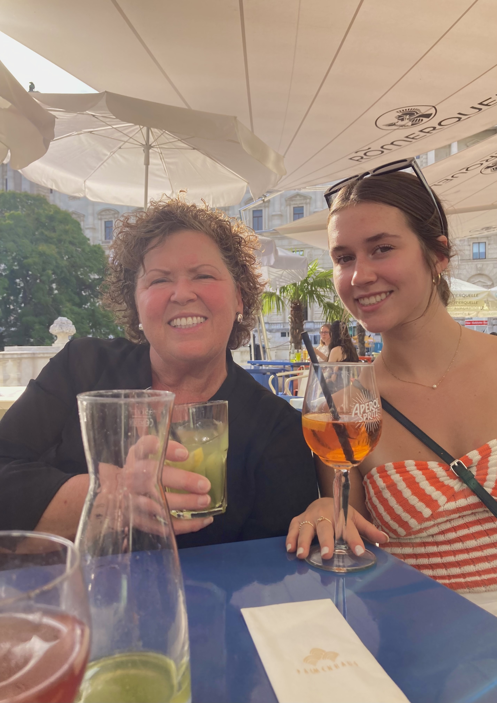
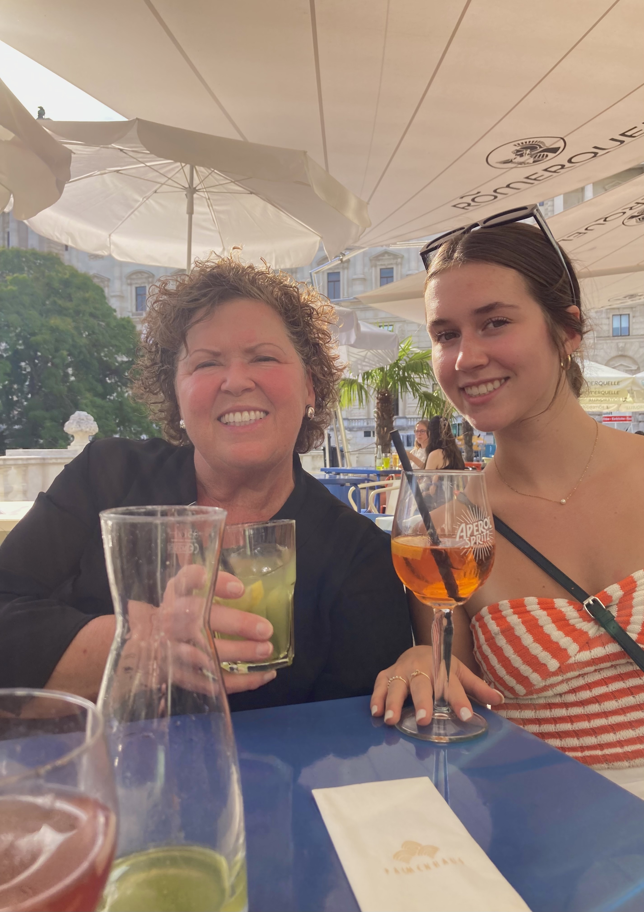
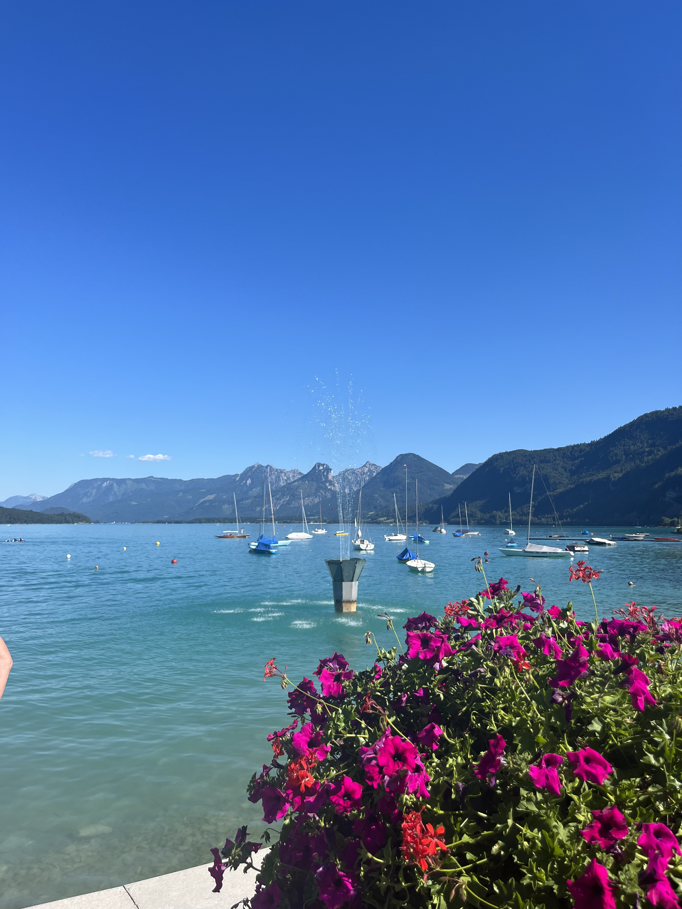
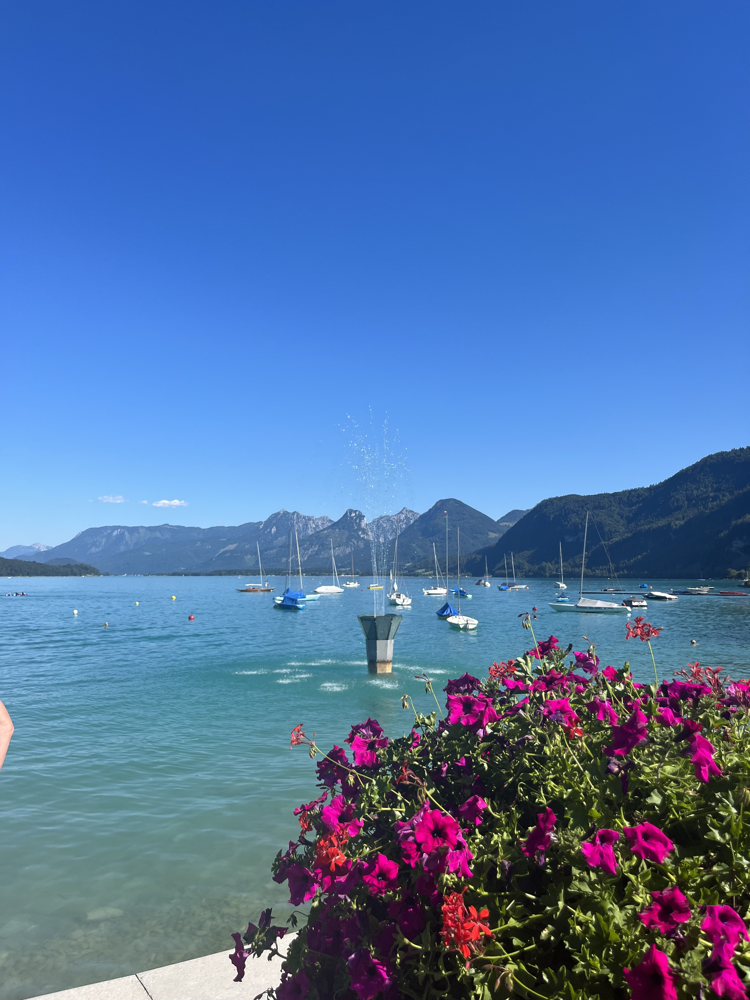
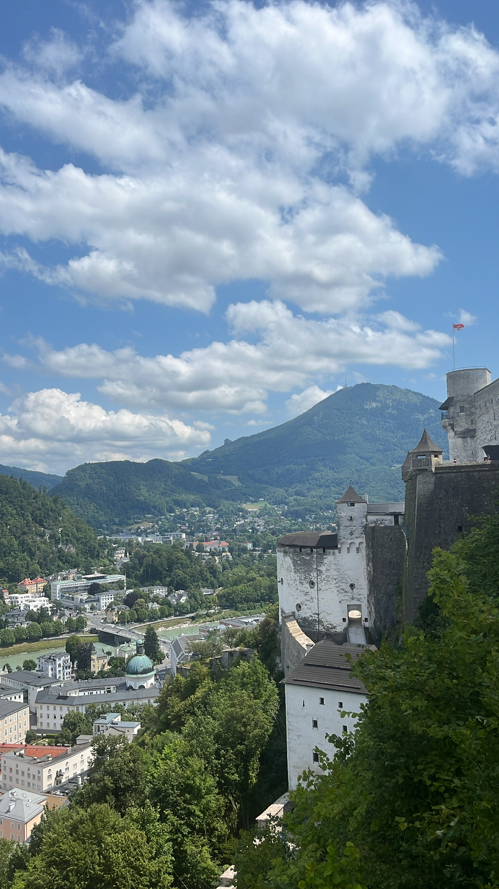
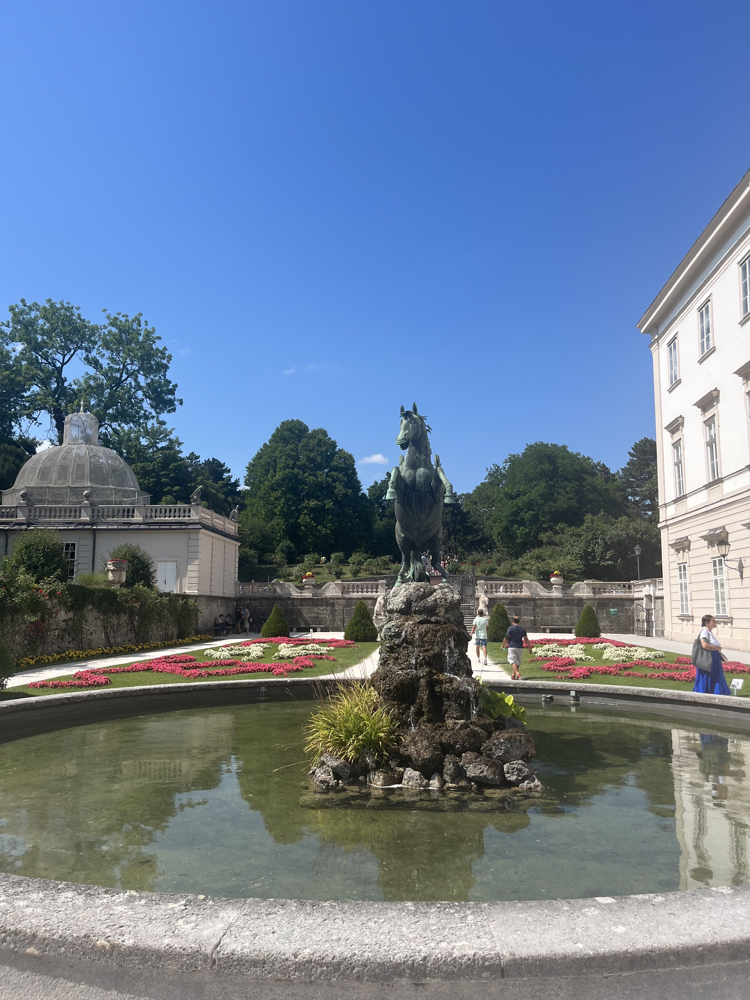
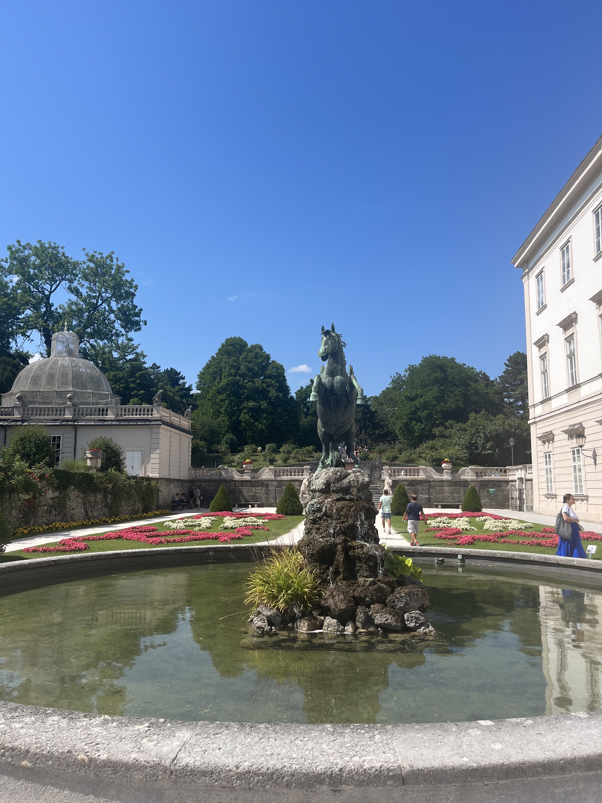

Austria
Day 3
From Bratislava, Slovakia, we drove to Vienna. We checked into Hotel Bristol, which was a super nice hotel. The elevator even had seats in it. Our room was very fancy with a chandelier, balcony, and complimentary champagne. We walked around the area around our hotel and got dinner at a cafe. After, we got ice cream in cinnamon cones.

Bratislava, Slovakia
Vienna, Austria
Day 4
In the morning, we took the subway to Schönbrunn Palace. The palace was huge and extremely beautiful. We took a horse and carriage around the palace grounds and saw its gardens and statues. Afterwards, we walked to the main garden to take pictures and enjoy its scenery. We ate lunch at a cafe in the palace.


 

Later, we walked to St. Stephen’s Cathedral which was enormous and had incredible architecture. We shopped around the city of Vienna and then took a tram to the Hofburg Palace. Unfortunately, the palace was under renovation, but we went to a nearby cafe for drinks and dessert.
Day 5
We left in the morning and drove an hour to our first stop of the day, Durnstein, Austria. It was a small city nestled in the Wachau Valley that was surrounded by vineyards. On the left was the Danube River and on the right was ruins of a fortress. We walked around the town and did a little bit of shopping.


Vienna, Austria

Durnstein, Austria


Next, we drove to Melk to see the Melk Abbey. The Melk Abbey had both a large palace and church. The palace was very ornate, but you couldn’t take pictures inside (although we snuck a picture of the library). The church had so many gold statues and paintings. We ate lunch in the courtyard of the Abbey.
Durnstein, Austria
Melk, Austria
We drove two hours to the town of St. Gilgen. The lake’s water was the most amazing turquoise blue and the lake was surrounded by the snow-capped Alps. The hills surrounding the lake were featured in the opening scene of the Sound of Music. We took a cable car up to the top of a mountain where the views were incredible! At the top, we could see four different lakes. Eventually, we made our way down to the bottom and dipped our feet in the lake. Afterwards, we drove to our hotel in Salzburg.
 

Melk, Austria
St. Gilgen, Austria
Day 6


We woke up in Salzburg and bussed across the Salzach River to the shopping district. Since it was Sunday, most of the shops were closed. We walked around a little and got some soft pretzels. After, we went inside St. Peter’s Church. Then, we walked to the cemetery behind the church and saw the gates where they filmed the hiding scene in the Sound of Music.
After, we walked to the funicular that took us up to the Hohensalzburg Fortress. The fortress had amazing views of the city and the mountains. We ate lunch at a restaurant on the fortress.



Later, we went to Mirabell Gardens. Here, there were more filming spots from the Sound of Music. The gardens were extremely beautiful and we walked around them for about an hour.

 

Day 7
In the morning, we drove from Salzburg to Hallstatt. Hallstatt was a town on a lake surrounded by mountains and it seemed straight out of a fairytale. It was drizzling outside which caused the clouds to form low, even below the mountains. We walked around the town and took pictures, and then we went into a small cave that held the skulls of people who were taken out of nearby graves once their time in the grave expired.


Salzburg, Austria
Hallstatt, Austria
We then took a boat tour of Lake Hallstatt. We made three stops around the lake, and the views of the mountains and the towns were incredible.